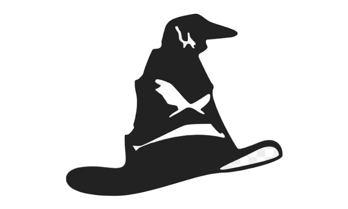

<!DOCTYPE html>
<html lang="en">
<head>
    <meta charset="UTF-8">
    <meta name="viewport" content="width=device-width, initial-scale=1.0">
    <title>CS-VQE Unitary Partitioning Heuristic</title>

    <!-- Tailwind CSS -->
    <script src="https://cdn.tailwindcss.com"></script>

    <!-- React 18 -->
    <script crossorigin src="https://unpkg.com/react@18/umd/react.production.min.js"></script>
    <script crossorigin src="https://unpkg.com/react-dom@18/umd/react-dom.production.min.js"></script>

    <!-- Babel for JSX -->
    <script src="https://unpkg.com/@babel/standalone/babel.min.js"></script>

    <!-- GSAP + ScrollTrigger -->
    <script src="https://cdnjs.cloudflare.com/ajax/libs/gsap/3.12.5/gsap.min.js"></script>
    <script src="https://cdnjs.cloudflare.com/ajax/libs/gsap/3.12.5/ScrollTrigger.min.js"></script>

    <!-- KaTeX -->
    <link rel="stylesheet" href="https://cdn.jsdelivr.net/npm/katex@0.16.11/dist/katex.min.css">
    <script src="https://cdn.jsdelivr.net/npm/katex@0.16.11/dist/katex.min.js"></script>

    <style>
        * { margin: 0; padding: 0; box-sizing: border-box; }
        body {
            overflow: hidden;
            background: #f1f5f9;
            color: #1e293b;
            font-family: 'Inter', system-ui, sans-serif;
        }

        /* Pauli term nodes — round "head" shape */
        .node {
            position: absolute;
            width: 68px;
            height: 68px;
            background: radial-gradient(circle at 38% 32%, #ffffff, #cbd5e1);
            border: 2px solid #94a3b8;
            border-radius: 50%;
            display: flex;
            flex-direction: column;
            align-items: center;
            justify-content: center;
            font-size: 0.72rem;
            color: #1e293b;
            z-index: 10;
            box-shadow: 0 3px 10px rgba(0,0,0,0.15);
            pointer-events: none;
            white-space: nowrap;
            line-height: 1.2;
        }
        .node .coeff-label {
            font-size: 0.6rem;
            opacity: 1;
            color: #475569;
            font-weight: 600;
        }

        /* Zone dashed borders — hidden initially, shown via GSAP */
        .zone {
            position: absolute;
            border: 2px dashed #94a3b8;
            border-radius: 12px;
            pointer-events: none;
        }
        .zone-label {
            position: absolute;
            top: -22px;
            left: 8px;
            font-size: 0.7rem;
            font-weight: 700;
            letter-spacing: 0.05em;
            text-transform: uppercase;
        }

        /* Commutation lines SVG */
        #chaos-lines {
            position: absolute;
            top: 0; left: 0;
            width: 100%; height: 100%;
            pointer-events: none;
            z-index: 5;
        }
        #chaos-lines path {
            stroke: rgba(59,130,246,0.35);
            stroke-width: 1.5;
            fill: none;
        }

        /* Non-contextual graph lines (Phase 4) */
        #noncon-lines {
            position: absolute;
            top: 0; left: 0;
            width: 100%; height: 100%;
            pointer-events: none;
            z-index: 5;
        }
        #noncon-lines line {
            stroke: #22c55e;
            stroke-width: 2;
            stroke-opacity: 0.6;
        }

        /* Speech bubble */
        .speech-bubble {
            position: absolute;
            left: 0; top: 0;
            z-index: 50;
            padding: 8px 18px;
            border-radius: 18px;
            font-size: 1rem;
            font-weight: 800;
            letter-spacing: 0.03em;
            text-transform: uppercase;
            white-space: nowrap;
            opacity: 0;
            pointer-events: none;
            filter: drop-shadow(0 2px 6px rgba(0,0,0,0.2));
        }
        .speech-bubble::after {
            content: '';
            position: absolute;
            bottom: -10px;
            left: 50%;
            transform: translateX(-50%);
            width: 0; height: 0;
            border-left: 10px solid transparent;
            border-right: 10px solid transparent;
        }
        #bubble-noncon { background: #22c55e; color: #052e16; }
        #bubble-noncon::after { border-top: 10px solid #22c55e; }
        #bubble-con { background: #ef4444; color: #fff; }
        #bubble-con::after { border-top: 10px solid #ef4444; }

        /* Right panel (dark sidebar for text readability) */
        #scroll-panel::-webkit-scrollbar { width: 6px; }
        #scroll-panel::-webkit-scrollbar-track { background: #1e293b; }
        #scroll-panel::-webkit-scrollbar-thumb { background: #475569; border-radius: 3px; }

        .narrative-section {
            min-height: 100vh;
            display: flex;
            flex-direction: column;
            justify-content: center;
            padding: 3rem;
        }
    </style>
</head>
<body>
    <div id="root"></div>

    <script type="text/babel">
    const { useEffect, useRef, useLayoutEffect } = React;

    // --- Exact dataset from Ralli et al. (2023) ---
    const TERMS = [
        { id: 1,  coeff: "0.7", pauli: "XZXI", type: "noncon", note: "Seed term. Accepted." },
        { id: 2,  coeff: "0.7", pauli: "ZZZI", type: "noncon", note: "Commutes with previous." },
        { id: 3,  coeff: "0.7", pauli: "XYXI", type: "noncon", note: "Compatible. Accepted." },
        { id: 4,  coeff: "0.6", pauli: "IIYI", type: "noncon", note: "High weight. Accepted." },
        { id: 5,  coeff: "0.6", pauli: "XZZI", type: "noncon", note: "Accepted." },
        { id: 6,  coeff: "0.5", pauli: "IIIZ", type: "noncon", note: "Diagonal term. Accepted." },
        { id: 7,  coeff: "0.5", pauli: "XXYI", type: "con",    note: "REJECTED. Violates structure." },
        { id: 8,  coeff: "0.2", pauli: "XXZI", type: "con",    note: "Rejected." },
        { id: 9,  coeff: "0.2", pauli: "YXXI", type: "con",    note: "Rejected." },
        { id: 10, coeff: "0.2", pauli: "YYZI", type: "con",    note: "Rejected." },
        { id: 11, coeff: "0.1", pauli: "YXYI", type: "noncon", note: "Surprise! Fits the symmetry." },
        { id: 12, coeff: "0.1", pauli: "XXI",  type: "con",    note: "Rejected." },
        { id: 13, coeff: "0.1", pauli: "YZXI", type: "con",    note: "Rejected." },
        { id: 14, coeff: "0.1", pauli: "ZYYI", type: "con",    note: "Rejected." },
    ];

    // --- Commutation relation computation ---
    // Two single-qubit Paulis anti-commute iff both non-identity and different.
    // Two multi-qubit Pauli strings commute iff the number of
    // anti-commuting positions is even.
    function pauliCommute(a, b) {
        const maxLen = Math.max(a.length, b.length);
        const pa = a.padEnd(maxLen, 'I');
        const pb = b.padEnd(maxLen, 'I');
        let antiCount = 0;
        for (let i = 0; i < maxLen; i++) {
            if (pa[i] !== 'I' && pb[i] !== 'I' && pa[i] !== pb[i]) {
                antiCount++;
            }
        }
        return antiCount % 2 === 0;
    }

    // Compute all commuting edges (pairs of term indices that commute)
    const COMMUTATION_EDGES = [];
    for (let i = 0; i < TERMS.length; i++) {
        for (let j = i + 1; j < TERMS.length; j++) {
            if (pauliCommute(TERMS[i].pauli, TERMS[j].pauli)) {
                COMMUTATION_EDGES.push([i, j]);
            }
        }
    }
    // Result: COMMUTATION_EDGES is an array of [i, j] index pairs
    // where TERMS[i] and TERMS[j] commute.

    // KaTeX render helper
    const Tex = ({ math }) => {
        const ref = useRef(null);
        useEffect(() => {
            if (ref.current && window.katex) {
                katex.render(math, ref.current, { throwOnError: false });
            }
        }, [math]);
        return <span ref={ref} />;
    };

    const App = () => {
        const stageRef = useRef(null);

        useLayoutEffect(() => {
            gsap.registerPlugin(ScrollTrigger);

            const stage = stageRef.current;
            if (!stage) return;
            const W = stage.offsetWidth;
            const H = stage.offsetHeight;
            const N = TERMS.length;
            const R = 34; // node radius (half of 68px)

            // ════════════════════════════════════════════
            //  LAYOUT CONSTANTS — edit these to fine-tune
            // ════════════════════════════════════════════
            const QUEUE_X        = W * 0.08;
            const QUEUE_Y_START  = H * 0.09;
            const QUEUE_SPACING  = 44;

            // Hat position: x,y is the TOP-LEFT corner of the 180px image.
            // Hat is ~180×140px. The "brim" (bottom) is ~y+135.
            const HAT_LEFT       = W * 0.42;       // hat left edge
            const HAT_TOP        = H * 0.35;       // hat top edge
            const HAT_W          = 180;
            const HAT_H_APPROX   = 140;
            // Node goes under brim with ~20px overlap
            const NODE_UNDER_X   = HAT_LEFT + HAT_W / 2 - R;   // center node under hat
            const NODE_UNDER_Y   = HAT_TOP + HAT_H_APPROX - 22; // overlap with brim

            // Bubble appears above the hat
            const BUBBLE_X       = HAT_LEFT + HAT_W / 2 - 70;
            const BUBBLE_Y       = HAT_TOP - 50;

            const NONCON_X       = W * 0.77;
            const NONCON_Y_START = H * 0.07;
            const CON_X          = W * 0.77;
            const CON_Y_START    = H * 0.55;
            const DEST_SPACING   = 40;

            // ── Phase 1: Sunflower layout (no overlaps) ──
            const blobCX = W * 0.42;
            const blobCY = H * 0.48;
            const goldenAngle = Math.PI * (3 - Math.sqrt(5));
            const sunflowerSpacing = 56; // guarantees no overlap for 68px nodes

            // Store polar coords for cluster rotation
            const nodeAngles = [];
            const nodeRadii = [];
            TERMS.forEach((_, i) => {
                const angle = i * goldenAngle;
                const r = sunflowerSpacing * Math.sqrt(i + 0.5);
                nodeAngles.push(angle);
                nodeRadii.push(r);
            });

            // Compute pixel position from polar offset
            const blobPos = (i, extraAngle) => ({
                x: blobCX + Math.cos(nodeAngles[i] + extraAngle) * nodeRadii[i] - R,
                y: blobCY + Math.sin(nodeAngles[i] + extraAngle) * nodeRadii[i] - R,
            });

            // Set initial positions (angle=0)
            TERMS.forEach((t, i) => {
                const p = blobPos(i, 0);
                gsap.set(`#node-${t.id}`, { x: p.x, y: p.y, opacity: 1, scale: 1 });
            });

            // Hat + zones + bubbles: hidden initially (Phase 1 = only nodes)
            gsap.set("#sorting-hat", { x: HAT_LEFT, y: HAT_TOP, opacity: 0 });
            gsap.set("#bubble-noncon", { x: BUBBLE_X, y: BUBBLE_Y, opacity: 0 });
            gsap.set("#bubble-con", { x: BUBBLE_X, y: BUBBLE_Y, opacity: 0 });
            // zones already have opacity:0 in JSX

            // ── Draw commutation lines (SVG curved paths, edge-to-edge) ──
            const svg = document.getElementById("chaos-lines");
            svg.innerHTML = "";
            COMMUTATION_EDGES.forEach(([i, j], idx) => {
                const path = document.createElementNS("http://www.w3.org/2000/svg", "path");
                path.id = `edge-${i}-${j}`;
                // Alternate curve direction so parallel edges don't overlap
                path.dataset.curveSign = (idx % 2 === 0) ? "1" : "-1";
                path.dataset.curveAmt = String(12 + (idx % 5) * 4); // 12–28px offset
                svg.appendChild(path);
            });

            // ── Cluster rotation + line updates via ticker ──
            const rotation = { angle: 0 };
            let chaosActive = true;

            const rotTween = gsap.to(rotation, {
                angle: Math.PI * 2,
                duration: 45,
                repeat: -1,
                ease: "none",
            });

            // Small individual wobble per node
            const wobbleTweens = TERMS.map((t, i) => {
                return gsap.to(`#node-${t.id}`, {
                    x: `+=${5 + (i % 4) * 2}`,
                    y: `+=${4 + (i % 3) * 2}`,
                    duration: 2 + (i % 3) * 0.6,
                    repeat: -1, yoyo: true,
                    ease: "sine.inOut",
                    delay: i * 0.12,
                });
            });

            const tickerUpdate = () => {
                if (!chaosActive) return;
                // Reposition nodes on rotating cluster
                TERMS.forEach((t, i) => {
                    const p = blobPos(i, rotation.angle);
                    gsap.set(`#node-${t.id}`, { x: p.x, y: p.y });
                });
                // Update SVG curved paths: edge-to-edge with bezier
                const sr = stage.getBoundingClientRect();
                COMMUTATION_EDGES.forEach(([i, j]) => {
                    const ni = document.getElementById(`node-${TERMS[i].id}`);
                    const nj = document.getElementById(`node-${TERMS[j].id}`);
                    const path = document.getElementById(`edge-${i}-${j}`);
                    if (!ni || !nj || !path) return;

                    const ri = ni.getBoundingClientRect();
                    const rj = nj.getBoundingClientRect();
                    // Node centers relative to stage
                    const cx1 = ri.left - sr.left + R;
                    const cy1 = ri.top  - sr.top  + R;
                    const cx2 = rj.left - sr.left + R;
                    const cy2 = rj.top  - sr.top  + R;

                    const dx = cx2 - cx1;
                    const dy = cy2 - cy1;
                    const dist = Math.sqrt(dx * dx + dy * dy) || 1;

                    // Skip if nodes overlap (dist < 2*R)
                    if (dist < R * 2 + 4) { path.setAttribute("d", ""); return; }

                    // Normalized direction
                    const nx = dx / dist;
                    const ny = dy / dist;

                    // Start/end at circle edges (not centers)
                    const startX = cx1 + nx * (R + 2);
                    const startY = cy1 + ny * (R + 2);
                    const endX   = cx2 - nx * (R + 2);
                    const endY   = cy2 - ny * (R + 2);

                    // Perpendicular offset for curve (avoids overlap)
                    const sign = parseFloat(path.dataset.curveSign);
                    const amt  = parseFloat(path.dataset.curveAmt);
                    const midX = (startX + endX) / 2 + (-ny) * amt * sign;
                    const midY = (startY + endY) / 2 + ( nx) * amt * sign;

                    path.setAttribute("d",
                        `M ${startX} ${startY} Q ${midX} ${midY} ${endX} ${endY}`
                    );
                });
            };
            gsap.ticker.add(tickerUpdate);

            // ── Main scroll-driven timeline ──
            const tl = gsap.timeline({
                scrollTrigger: {
                    trigger: "#scroll-content",
                    scroller: "#scroll-panel",
                    start: "top top",
                    end: "bottom bottom",
                    scrub: 1.5,
                    onUpdate: (self) => {
                        if (self.progress > 0.01) {
                            chaosActive = false;
                            rotTween.pause();
                            wobbleTweens.forEach(tw => tw.pause());
                        } else {
                            chaosActive = true;
                            rotTween.resume();
                            wobbleTweens.forEach(tw => tw.resume());
                        }
                    }
                }
            });

            // ═══════ PHASE 2: Chaos → Sorted Queue ═══════
            // Fade out commutation lines
            tl.to("#chaos-lines", { opacity: 0, duration: 0.5 }, "sort");
            // Fade in zones
            tl.to("#zone-queue", { opacity: 1, duration: 0.5 }, "sort");
            tl.to("#zone-noncon", { opacity: 1, duration: 0.5 }, "sort+=0.5");
            tl.to("#zone-con", { opacity: 1, duration: 0.5 }, "sort+=0.5");

            // Move nodes to queue (coefficients already visible)
            TERMS.forEach((t, i) => {
                tl.to(`#node-${t.id}`, {
                    x: QUEUE_X,
                    y: QUEUE_Y_START + i * QUEUE_SPACING,
                    duration: 1.5,
                    ease: "power2.inOut",
                }, "sort");
            });

            tl.addLabel("sort-done", ">");

            // Fade in the hat before Phase 3
            tl.to("#sorting-hat", { opacity: 1, duration: 0.6, ease: "power2.in" }, "sort-done");
            tl.to({}, { duration: 0.3 });

            // ═══════ PHASE 3: Sorting Hat Loop ═══════
            let nonconIdx = 0;
            let conIdx = 0;

            TERMS.forEach((t, i) => {
                const isNonCon = t.type === "noncon";
                const isSpecial7 = t.id === 7;
                const isSpecial11 = t.id === 11;
                const lab = `proc-${i}`;

                // 3a. Node slides under the hat brim
                tl.to(`#node-${t.id}`, {
                    x: NODE_UNDER_X,
                    y: NODE_UNDER_Y,
                    scale: 1.1,
                    borderColor: "#64748b",
                    zIndex: 100,
                    duration: 1,
                    ease: "power2.out",
                }, lab);

                // 3b. Hat "thinking"
                if (isSpecial7) {
                    tl.to("#sorting-hat", { rotation: -12, duration: 0.15 }, `${lab}+=0.8`);
                    tl.to("#sorting-hat", { rotation: 12, duration: 0.15 }, ">");
                    tl.to("#sorting-hat", { rotation: -8, duration: 0.12 }, ">");
                    tl.to("#sorting-hat", { rotation: 0, duration: 0.12 }, ">");
                } else if (isSpecial11) {
                    tl.to("#sorting-hat", { y: HAT_TOP - 14, duration: 0.2, ease: "power2.out" }, `${lab}+=0.8`);
                    tl.to("#sorting-hat", { y: HAT_TOP, duration: 0.3, ease: "bounce.out" }, ">");
                } else {
                    tl.to("#sorting-hat", { scale: 1.06, duration: 0.15 }, `${lab}+=0.8`);
                    tl.to("#sorting-hat", { scale: 1, duration: 0.15 }, ">");
                }

                // 3c. Verdict — hat glow + speech bubble
                const vLab = `verdict-${i}`;
                tl.addLabel(vLab);

                const bubbleId = isNonCon ? "#bubble-noncon" : "#bubble-con";
                const glowFilter = isNonCon
                    ? "drop-shadow(0 0 25px #22c55e) drop-shadow(0 0 50px #22c55e)"
                    : "drop-shadow(0 0 25px #ef4444) drop-shadow(0 0 50px #ef4444)";

                tl.to("#sorting-hat", { filter: glowFilter, duration: 0.2 }, vLab);
                tl.to(bubbleId, {
                    opacity: 1, scale: 1.1, y: BUBBLE_Y - 8,
                    duration: 0.25, ease: "back.out(2)",
                }, vLab);

                // 3d. Move node to destination
                const destX = isNonCon ? NONCON_X : CON_X;
                const destY = isNonCon
                    ? NONCON_Y_START + nonconIdx * DEST_SPACING
                    : CON_Y_START + conIdx * DEST_SPACING;
                const color = isNonCon ? "#22c55e" : "#ef4444";
                const darkColor = isNonCon ? "#166534" : "#991b1b";

                if (isNonCon) nonconIdx++;
                else conIdx++;

                tl.to(`#node-${t.id}`, {
                    x: destX, y: destY, scale: 1,
                    background: `radial-gradient(circle at 38% 32%, ${color}, ${darkColor})`,
                    borderColor: color,
                    color: "#fff",
                    duration: 1.2,
                    ease: "back.out(1.4)",
                }, `${vLab}+=0.3`);

                // 3e. Fade bubble + reset hat glow
                tl.to(bubbleId, { opacity: 0, scale: 1, y: BUBBLE_Y, duration: 0.2 }, ">");
                tl.to("#sorting-hat", {
                    filter: "drop-shadow(0 2px 6px rgba(0,0,0,0.15))",
                    duration: 0.2,
                }, "<");

                tl.to({}, { duration: 0.2 });
            });

            // ═══════ PHASE 4: Non-contextual graph reveal ═══════
            tl.addLabel("phase4");

            // Hide hat + queue zone
            tl.to("#sorting-hat", { opacity: 0, duration: 0.5 }, "phase4");
            tl.to("#zone-queue", { opacity: 0, duration: 0.5 }, "phase4");
            tl.to("#zone-noncon", { opacity: 0, duration: 0.5 }, "phase4");

            // Non-contextual graph layout:
            //   IIIZ (id 6) at center-bottom
            //   3 clusters above: [XZXI+ZZZI], [XYXI+XZZI], [IIYI+YXYI]
            const GRAPH = {
                6:  { x: W * 0.32 - R, y: H * 0.62 - R },   // IIIZ center
                1:  { x: W * 0.08 - R, y: H * 0.20 - R },   // XZXI
                2:  { x: W * 0.20 - R, y: H * 0.24 - R },   // ZZZI
                3:  { x: W * 0.30 - R, y: H * 0.14 - R },   // XYXI
                5:  { x: W * 0.44 - R, y: H * 0.14 - R },   // XZZI
                4:  { x: W * 0.54 - R, y: H * 0.24 - R },   // IIYI
                11: { x: W * 0.66 - R, y: H * 0.20 - R },   // YXYI
            };

            // Non-contextual commutation edges
            const GRAPH_EDGES = [
                [6, 1], [6, 2], [6, 3], [6, 5], [6, 4], [6, 11],
                [1, 2], [3, 5], [4, 11],
            ];

            // Pre-build SVG lines for the noncon graph
            const nonconSvg = document.getElementById("noncon-lines");
            nonconSvg.innerHTML = "";
            GRAPH_EDGES.forEach(([a, b]) => {
                const line = document.createElementNS("http://www.w3.org/2000/svg", "line");
                line.setAttribute("x1", GRAPH[a].x + R);
                line.setAttribute("y1", GRAPH[a].y + R);
                line.setAttribute("x2", GRAPH[b].x + R);
                line.setAttribute("y2", GRAPH[b].y + R);
                nonconSvg.appendChild(line);
            });
            gsap.set("#noncon-lines", { opacity: 0 });

            // Move non-contextual nodes to graph positions
            Object.entries(GRAPH).forEach(([id, pos]) => {
                tl.to(`#node-${id}`, {
                    x: pos.x, y: pos.y,
                    scale: 1,
                    duration: 1.5,
                    ease: "power2.inOut",
                }, "phase4+=0.5");
            });

            // Fade in the commutation graph lines
            tl.to("#noncon-lines", { opacity: 1, duration: 0.8 }, "phase4+=1.5");

            // End padding
            tl.to({}, { duration: 2 });

            return () => {
                gsap.ticker.remove(tickerUpdate);
                rotTween.kill();
                wobbleTweens.forEach(tw => tw.kill());
                ScrollTrigger.getAll().forEach(st => st.kill());
                tl.kill();
            };
        }, []);

        return (
            <div style={{ display: "flex", height: "100vh", overflow: "hidden" }}>

                {/* === LEFT PANEL: Animation Stage (60%) === */}
                <div ref={stageRef} id="stage" style={{
                    width: "60%", height: "100%", position: "relative",
                    background: "linear-gradient(160deg, #e2e8f0 0%, #cbd5e1 100%)",
                    borderRight: "1px solid #94a3b8", overflow: "hidden"
                }}>

                    {/* Zones — hidden initially, revealed in Phase 2 */}
                    <div id="zone-queue" className="zone" style={{ top: "8%", left: "4%", width: "22%", height: "85%", opacity: 0 }}>
                        <div className="zone-label" style={{ color: "#475569" }}>Queue (|c| desc)</div>
                    </div>
                    <div id="zone-noncon" className="zone" style={{
                        top: "5%", right: "3%", width: "22%", height: "42%", opacity: 0,
                        borderColor: "rgba(34,197,94,0.5)", background: "rgba(34,197,94,0.08)"
                    }}>
                        <div className="zone-label" style={{ color: "#16a34a" }}>
                            H<sub>noncon</sub> (Classical)
                        </div>
                    </div>
                    <div id="zone-con" className="zone" style={{
                        bottom: "5%", right: "3%", width: "22%", height: "42%", opacity: 0,
                        borderColor: "rgba(239,68,68,0.5)", background: "rgba(239,68,68,0.08)"
                    }}>
                        <div className="zone-label" style={{ color: "#dc2626" }}>
                            H<sub>con</sub> (Quantum VQE)
                        </div>
                    </div>

                    {/* Sorting Hat — NO CSS transform, positioned entirely via GSAP */}
                    

                    {/* Speech bubbles — positioned via GSAP */}
                    <div id="bubble-noncon" className="speech-bubble">Non-Contextual!</div>
                    <div id="bubble-con" className="speech-bubble">Contextual!</div>

                    {/* SVG overlay for commutation lines */}
                    <svg id="chaos-lines"></svg>
                    {/* SVG overlay for Phase 4 non-contextual graph */}
                    <svg id="noncon-lines"></svg>

                    {/* Pauli term nodes — round "heads" */}
                    {TERMS.map(t => (
                        <div key={t.id} id={`node-${t.id}`} className="node">
                            <span className="coeff-label" id={`coeff-${t.id}`}>{t.coeff}</span>
                            <Tex math={t.pauli} />
                        </div>
                    ))}
                </div>

                {/* === RIGHT PANEL: Scrollable Narrative (40%) === */}
                <div id="scroll-panel" style={{
                    width: "40%", height: "100%", overflowY: "auto", background: "#1e293b"
                }}>
                    <div id="scroll-content">

                        {/* Phase 1: Chaos */}
                        <div className="narrative-section">
                            <h1 style={{ fontSize: "2rem", fontWeight: 800, color: "#60a5fa", marginBottom: "1.5rem" }}>
                                1. The Hamiltonian
                            </h1>
                            <p style={{ fontSize: "1.1rem", color: "#cbd5e1", lineHeight: 1.7, marginBottom: "1rem" }}>
                                We begin with the full molecular Hamiltonian, decomposed into 14 Pauli strings.
                                Each term has a coefficient representing its energy contribution.
                            </p>
                            <div style={{
                                background: "#0f172a", padding: "1.2rem", borderRadius: "8px",
                                border: "1px solid #334155", textAlign: "center", marginBottom: "1rem",
                                color: "#e2e8f0"
                            }}>
                                <Tex math={"\\color{#e2e8f0} H_{\\text{full}} = \\sum_{a=1}^{14} c_a \\, P_a"} />
                            </div>
                            <p style={{ color: "#64748b", fontSize: "0.9rem" }}>
                                Scroll down to begin the sorting process...
                            </p>
                        </div>

                        {/* Phase 2: Greedy Sort */}
                        <div className="narrative-section">
                            <h2 style={{ fontSize: "1.8rem", fontWeight: 700, color: "#facc15", marginBottom: "1.5rem" }}>
                                2. The Greedy Sort
                            </h2>
                            <p style={{ fontSize: "1.1rem", color: "#cbd5e1", lineHeight: 1.7, marginBottom: "1rem" }}>
                                We apply a <strong>greedy heuristic</strong>: sort all terms by their
                                coefficient magnitude <Tex math={"|c_a|"} /> in descending order.
                            </p>
                            <p style={{ color: "#94a3b8", lineHeight: 1.7 }}>
                                <strong>Why?</strong> We want to prioritize capturing the highest-energy terms
                                in the Non-Contextual (classical) part of the simulation. This maximizes
                                the energy captured cheaply.
                            </p>
                        </div>

                        {/* Phase 3: Sorting Hat */}
                        <div className="narrative-section">
                            <h2 style={{ fontSize: "1.8rem", fontWeight: 700, color: "#c084fc", marginBottom: "1.5rem" }}>
                                3. The Contextuality Test
                            </h2>
                            <p style={{ fontSize: "1.1rem", color: "#cbd5e1", lineHeight: 1.7, marginBottom: "1rem" }}>
                                The <strong>"Sorting Hat"</strong> examines each term in order.
                                It checks commutation relations and clique compatibility with the
                                current Non-Contextual set.
                            </p>
                            <ul style={{ color: "#cbd5e1", lineHeight: 2, paddingLeft: "1.5rem", marginBottom: "1rem" }}>
                                <li><span style={{ color: "#22c55e", fontWeight: 700 }}>Non-Contextual:</span> Commutes universally &rarr; Green Zone</li>
                                <li><span style={{ color: "#ef4444", fontWeight: 700 }}>Contextual:</span> Violates structure &rarr; Red Zone</li>
                            </ul>
                            <div style={{
                                background: "#0f172a", padding: "1rem", borderRadius: "8px",
                                border: "1px solid #475569", fontSize: "0.9rem", color: "#94a3b8"
                            }}>
                                Watch term #7 (<Tex math={"0.5\\;XXYI"} />) &mdash; high weight but <strong style={{ color: "#ef4444" }}>rejected!</strong><br/>
                                And term #11 (<Tex math={"0.1\\;YXYI"} />) &mdash; low weight but <strong style={{ color: "#22c55e" }}>accepted!</strong>
                            </div>
                        </div>

                        {/* Spacer for sorting animation scroll room */}
                        <div style={{ minHeight: "300vh" }}>
                            <div style={{ padding: "3rem", paddingTop: "6rem" }}>
                                <p style={{ color: "#64748b", fontStyle: "italic" }}>
                                    Sorting in progress... keep scrolling to process all 14 terms.
                                </p>
                            </div>
                        </div>

                        {/* Phase 4: Result */}
                        <div className="narrative-section">
                            <h2 style={{ fontSize: "1.8rem", fontWeight: 700, color: "#2dd4bf", marginBottom: "1.5rem" }}>
                                4. The Result
                            </h2>
                            <p style={{ fontSize: "1.1rem", color: "#cbd5e1", lineHeight: 1.7, marginBottom: "1.5rem" }}>
                                The heuristic is complete. The Hamiltonian has been partitioned:
                            </p>
                            <div style={{ display: "flex", gap: "1rem", marginBottom: "1.5rem" }}>
                                <div style={{
                                    flex: 1, background: "rgba(34,197,94,0.1)", border: "1px solid rgba(34,197,94,0.3)",
                                    borderRadius: "8px", padding: "1rem", textAlign: "center"
                                }}>
                                    <div style={{ color: "#22c55e", fontWeight: 700, fontSize: "1.2rem" }}>
                                        <Tex math={"H_{\\text{noncon}}"} />
                                    </div>
                                    <div style={{ color: "#94a3b8", marginTop: "0.5rem" }}>7 terms &middot; Solved Classically</div>
                                    <div style={{ color: "#22c55e", fontWeight: 600, marginTop: "0.3rem" }}>Cheap</div>
                                </div>
                                <div style={{
                                    flex: 1, background: "rgba(239,68,68,0.1)", border: "1px solid rgba(239,68,68,0.3)",
                                    borderRadius: "8px", padding: "1rem", textAlign: "center"
                                }}>
                                    <div style={{ color: "#ef4444", fontWeight: 700, fontSize: "1.2rem" }}>
                                        <Tex math={"H_{\\text{con}}"} />
                                    </div>
                                    <div style={{ color: "#94a3b8", marginTop: "0.5rem" }}>7 terms &middot; Quantum VQE</div>
                                    <div style={{ color: "#ef4444", fontWeight: 600, marginTop: "0.3rem" }}>Expensive</div>
                                </div>
                            </div>
                            <p style={{ color: "#94a3b8", lineHeight: 1.7 }}>
                                By partitioning smartly, CS-VQE reduces the quantum resources needed &mdash;
                                only the contextual terms require the full quantum treatment.
                            </p>
                        </div>

                        {/* Bottom padding */}
                        <div style={{ height: "50vh" }} />
                    </div>
                </div>
            </div>
        );
    };

    ReactDOM.createRoot(document.getElementById('root')).render(<App />);
    </script>
</body>
</html>
